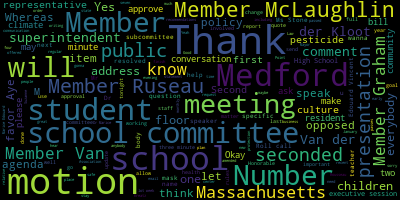
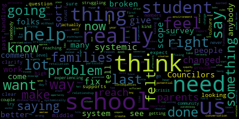

AI-generated transcript of 12.06.2021 - Regular School Committee Meeting
Back to all transcripts
[Lungo-Koehn]: One prompted. Roll call. Roll call, yeah.
[McLaughlin]: Member Graham? Here. Member Kretz? Here. Member McLaughlin? Here. Member McStone? Here. Member Russo? Here. Member Van de Kloet? Here. Mayor Long-O'Karn?
[Lungo-Koehn]: Here. Seven present, zero absent. Do we have any student representatives on our meeting?
[SPEAKER_08]: Yes, they'll be here at 6.30.
[Lungo-Koehn]: 6.30, okay. And if we may rise to salute the flag.
[SPEAKER_08]: I pledge allegiance to the flag of the United States of America and to the Republic for which it stands, one nation under God, indivisible, with liberty and justice for all.
[Lungo-Koehn]: Negotiations and legal matters. Executive session, 6 p.m. Upon motion to enter into executive session pursuant to Mass General Law, Chapter 30A, Section 21A, the Memphis School Committee will convene in executive session. To hear a grievance being brought by the Medford Teachers Association, the Medford School Committee will reconvene in public session following the conclusion of the executive session. Is there a motion?
[McLaughlin]: Motion to move into executive session.
[Lungo-Koehn]: Motion by Member McLaughlin, seconded by Member Van de Kloet. Roll call, please.
[McLaughlin]: Member Graham.
[Lungo-Koehn]: Yes.
[McLaughlin]: Member Kratz.
[Lungo-Koehn]: Yes.
[McLaughlin]: Member McLaughlin, yes. Member McStone. Yes. Member Rousseau. Yes. Member Van de Kloet. No longer current.
[Lungo-Koehn]: Yes, 70 affirmative, zero in the negative. We are gonna go to room 207 for executive session. Good evening, thank you for your patience. We were in executive session until 644. We have our student representative, Gabrielle Puccio. Thank you for joining us. Next up we have- Point of order. Point of order. Point of order, member Russo.
[Ruseau]: Is there a mask mandate in city hall?
[Lungo-Koehn]: We ask that everybody do wear masks. I think every, I thought everybody had one on. I think I have some in my office if anybody needs a mask.
[Ruseau]: Can we have everybody use a mask as required? The mandate wasn't a request, it was a mandate, correct?
[Lungo-Koehn]: I think we have two. Would you mind putting, do you have a mask? If everybody could put on a mask, that'd be great. Just where there are a lot of people, we have the new variants.
[Ruseau]: I'll motion to adjourn this meeting if I do not have masks on everybody in the room. I'm not sure what the point of a mandate is, if it is not actually gonna be followed in the very chamber where we're actually governing.
[Lungo-Koehn]: We're just asking everybody in the audience, if you could put a mask, thank you. Exemption. I can't mandate medical exemption. We have number four, consent agenda, approval of bills, payrolls, regular school committee meeting minutes, 11-15-2021. Is there a motion on the floor?
[Ruseau]: Motion to approve.
[Lungo-Koehn]: Second. Motion to approve by Member Rousseau, seconded by Member McLaughlin. All those in favor? Aye. All those opposed? We just wanna make a statement and let everybody know, I know there's a number of people that wanna speak tonight, so just make a statement to let you understand when that will be appropriate, which is very soon after the superintendent's update. So we know we have a number of guests with us this evening, potentially both students and staff, which is true. As the superintendent commented in multiple communications last week at Medford High School in particular, we have seen an important dialogue that has been occurring in recent days regarding student discipline, school culture, and the overall climate of our school communities. For that reason, we have an agenda item for tonight's meeting that aims to address some of these concerns and to continue a conversation we've been having for some time around how we best ensure a climate that is conducive to student growth and learning. When we come to that agenda item in a few minutes, I'm gonna ask for a motion to suspend the rules so we can open up the floor to our guests and allow community participation on this subject matter in particular. We have rules in place to limit the amount of time for each speaker and for purposes of being respectful, I'm going to ask that time that the speakers adhere to our three minute limitation on comments. More importantly, however, because of the sensitivity of the topic, I wanna make clear that the reference of specific students or specific incidents of misconduct are not appropriate for this forum. The school committee is a policy making body and we do not address matters concerning specific children. It would be unfair to any child to be specifically named in a meeting of a public body like this one. So again, we are eager to hear from everyone tonight and we wanna give you the floor. I know there are a lot of meetings and conversations taking place among administrators, counselors and students in recent days. And I think it is really important that those conversations continue. But as the Memphis School Committee is a public body, we have a heightened responsibility to both make sure we are engaged in a substantive policy-driven conversation about how do we address these very concerns that our students, staff, parents, and caregivers are bringing to our attention, while also respecting the rights of everyone involved. So short version, please no names, and let's try to stay away from specifically describing specific incidences So we can instead focus on the bigger picture issues that we need to address to both keep our kids safe and instill confidence in them to stay safe. And I know the superintendent will be commenting on this in her remarks as well in just a few minutes. So thank you for your patience. On number five, we have report of subcommittees, special education, subcommittee meeting minutes, 11-18-2021. Member McLaughlin.
[McLaughlin]: Thank you. The special education subcommittee meeting meets every other month. We met to create, to advise with the community, work with the community to advise on a problem of practice for our subcommittee to work on to this year. And it was a consensus that we recommend to the school committee that we would like to continue to work on establishing friendships for students with and without disabilities, looking into the best buddies programming possibility, disability awareness programming and CCSR projects.
[Lungo-Koehn]: Is there a motion to approve the minutes?
[Ruseau]: Motion to approve.
[Lungo-Koehn]: My member Russo, seconded by... Second. Member McLaughlin, roll. All those in favor? Aye. All those opposed? Meeting minutes are passed.
[Ruseau]: Mayor?
[Lungo-Koehn]: Member Russo?
[Ruseau]: I don't see on the agenda the Boy Scout part of the... I know there's some Boy Scout thing going on tonight, and I would like to not have them wait until hours from now. Is there any way we can... I don't know where it is on the agenda, so it's hard to take it out of order.
[Lungo-Koehn]: Are you here to observe the meeting or did you, are you here, they're here to observe.
[Ruseau]: Thank you. Thank you.
[Lungo-Koehn]: Thank you for being here. Welcome. Um, next up we have report of superintendent superintendents updates and comments. Dr. Maurice Edward Vincent. Good evening.
[Edouard-Vincent]: Before I begin with my comments, I must address incidents that have occurred at Medford High School. As a school district, we have discussed repeatedly the pronounced social and emotional needs of our students coming off of such a long period of instructional disruption caused by the pandemic. We are very aware that students cannot learn if they do not feel safe and supported. As educators, it is our moral and professional obligation to cultivate an environment in which every student feels secure and ready to learn. The most fundamental element of this culture that we are trying to build is a recognition that there is simply no place for violence in our schools. Last week's fights that occurred at Medford High School resulted in very understandable and mostly constructive outcry from students who want to see change. We are grateful to the many students who accepted an invitation to meet with our administrators and counselors to begin discussing what steps we can take as a community to foster an environment grounded in support and respect. This will not happen overnight. The work has begun and the process will continue until every student and staff member feel safe and comfortable at Medford High School. We are dedicated to this goal and we urge all in the Mustang community to work with us to help restore the normalcy we expect in all of our schools. And as we continue to tackle this, I ask our students to partner with us. If you hear something, If you see something, you need to say something to an administrator so that we can be a partner with you to address any challenges that might happen or a plan to happen later in the day. I also put out a call to parents to partner with us because if you see something at home or you hear something, We ask that you partner with us, call the school, speak with the principal or the counselors and let us know how we can also support you so that together we can build a stronger community. So those are my remarks on what has happened with last week. I do wanna continue to give you key updates regarding the district. The first update is about our public health update. So turning our attention as we do every meeting to public health and COVID-19 related matters, this past week, coming out of the Thanksgiving holiday weekend, we saw a significant uptick in COVID-19 positivity. While our testing program had been returning a positivity rate under 1%, last week, in over 4,000 COVID tests, we returned a positivity rate of just under 4%. While this was not necessarily surprising, it is a reminder of the need for continued vigilance. especially during this holiday season when so many are gathering with loved ones for social occasions. As I noted in my message to the community this past Friday, we have seen very strong participation in the vaccination clinics that the Board of Health and the Health Services Department facilitated. We have an active discussions now with the Board of Health in the hope of organizing additional opportunities for our students. particularly those between the ages of five and 11, who just became eligible to become vaccinated. On Saturday, December 11th, at the Andrews Middle School, from 9 a.m. to 1 p.m., we will hold the second dose clinic to complete the series for students that attended the November 20th clinic. Being vaccinated is the best way to fulfill the obligation we owe to one another to minimize COVID in our communities and keep our students in school. As many Medford public school staff members are aware, our employee daycare program, Kids Corner, has seen a COVID outbreak in recent days. Three of the five Kids Corner classrooms have been forced to quarantine due to COVID spread. Daycare programs in our region and around the country have faced similar and greater challenges since the beginning of the pandemic. with the age eligibility restrictions for the vaccine being what they are. The need for heightened vigilance is substantial in programs like Kids' Corner. We know that this has caused significant stress to our employees who rely on this service, as well as to parents of students whose teachers are affected. vigilance will be critical to continued operations of kids corner, as it will for all components of our organization, as we continue to emerge from the pandemic. I do wanna say that I hope everyone had a safe and enjoyable Thanksgiving holiday. I wanted to take this moment to extend a special thank you to Bill and Sue Honeycutt of John Brewer's Tavern for hosting Medford and Malden football teams, coaches, cheerleaders, mayors, and both central administrations for the annual Thanksgiving luncheon. I also want to extend a huge thanks to Dr. Cushing, Principal DeLava. Athletic Director Maloney, Building and Grounds Director McLaughlin, Band Director Mizrelo, the Mustang Band, our cheerleaders, for presenting, I believe, the first ever outdoor pep rally for Thanksgiving. By hosting it outside, it allowed us all to cheer on our football team safely. For those who enjoyed the close game on Turkey Day, the Mustangs truly appreciated your support. Although we did not prevail, it was a hard-fought game with the final score, Malden 12 and Medford 10. Speaking of athletics, winter sports tryouts began on November 29th for both Medford High School and our middle schools. Winter season begins late this week. I also want to share that the Tuesday before Thanksgiving, Mayor Brianna and I were honored to join with Principal Garvino and Assistant Principal Andrews at the McGlynn Elementary School's Thanksgiving food drive. It was organized by teachers, Ms. Daugherty, Ms. Fiorentino, and Ms. Materano. They were able to provide food baskets to families in need through the Medford Family Network. All the students participated, and I'm proud to say that they did not get donations from supermarkets, so it was a school-sponsored event, and they were really able to help our community in need. I also want to extend sincere congratulations to our Medford Mustang Marching Band for placing third in Division III at the New England Scholastic Band Association's Championship Finals. Their show, The Force, earned them a score of 91.4 out of 100 from the judges at the competition in Reading. on October 31st. Member McStone's daughter, Teagan, serves as a drum major and led the band through its competition season, which took them to Melrose, North Andover, Wakefield, Billerica, and Dartmouth. At two of the competitions, the Color Guard, led by seniors Alyssa Parziale, Kaylee McCray, and Laura Lewis, along with freshman Maria Zasra, They took first place in Division III. The band includes students from Medford High School, Medford Vocational Technical High School, and the McGlynn and Andrews Middle Schools. Additionally, I want to just share some wonderful news and I want to thank the Medford community. This past weekend, the Mustang Band Parents Association sold 160 trees and 120 wreaths. I want to thank the Medford community for your generous support of our wonderful band. As a result of essentially being sold out. There are no more leaves left, no more trees left, they actually came down to the final five trees. And so, those five trees will be sold by appointment only. It's a great annual fundraiser, and as a result of the great success, they will not be selling trees this weekend but thank you again on behalf of our wonderful band. and the parents who worked in the band students who volunteered their time this weekend and last weekend as well. On Saturday as well, the Medford Family Network's annual toy and book swap was held, and it was an amazing success. The Medford Family Network is indebted to so many organizations and individuals who have stepped up to benefit our families. They are reaching out one more time to match the 30 remaining families who need to be matched with a donor. We have families of a variety of sizes. Each family has submitted a list of three wishes per child. We're calling you a wish filler. If you would like to be a wish filler for those remaining 30 families, please contact Marie Cassidy at 781-393-2106 or mcassidyatmedford.k12.ma.us. And if anyone would like to help and just be an additional support during this time, reach out to Marie Cassidy. They are looking for helpers as well. I want to say that last week, Memphit High School hosted their parent-teacher conferences in the gym. It was wonderful that parents and caregivers were able to meet with their students' teachers in person this year, and both days were very successful. So we do have a few upcoming events, as I bring my remarks to a close this Wednesday, December 8 from six to 8pm Medford CPAC will have a presentation on basic rights, understanding the IP. Please note that pre registration is required. Also on Wednesday, December 8 at 7pm. The winter concert featuring the middle school band high school band and marching band will be held in a Karen theater. On Thursday, December 9th at 7pm, the winter concert featuring the Middle School Orchestra and High School Orchestra will be held in the Caron Theater. Both concerts are open to the public for a $5 admission fee. Please plan to wear a face covering when you are inside the building. On Saturday, December 11, this coming Saturday from nine to one, again as a second dose vaccination clinic at the Andrews Middle School for our students that are five to 11 years old. The Jewish holiday of Hanukkah ends this evening. It is my hope that our Jewish families and neighbors had an enjoyable and safe holiday. I would like to end my comments with this quote from Rabbi Lord Jonathan Sachs. For they, my faith is not yours and your faith is not mine. If we are each free to light our own flame together, we can banish some of the darkness of the world. Thank you.
[Lungo-Koehn]: Thank you, Dr. Edward Vincent.
[Ruseau]: Member Rousseau. Thank you. I just had a quick question about our dashboard. Does the dashboard include Kids' Corner staff and children that are in the Kids' Corner for positive cases?
[Lungo-Koehn]: Our school dashboard.
[Edouard-Vincent]: On the school dashboard?
[Ruseau]: Yes. But I don't, if you don't know, I mean, we can just, I'm not sure.
[Edouard-Vincent]: I believe for staff, they would definitely be included. And I, yes, I'm getting a yes. I just put my cheaters on.
[John McLaughlin]: Okay.
[Edouard-Vincent]: Thank you very much.
[Lungo-Koehn]: Yes.
[Edouard-Vincent]: Thank you.
[Lungo-Koehn]: We have number two briefing on student disciplinary policies and efforts related to school climate and culture, Dr. Maurice Edward Vincent, Assistant Superintendent Dr. Peter Cushing, and Assistant Superintendent Suzanne Galluzzi, and Ms. Stacey Shulman.
[Edouard-Vincent]: Good evening. This evening, we will be presenting Culture, Climate, and Disciplinary Practices. Again, this evening, Suzanne Galussi, our Assistant Superintendent of Elementary Schools, Dr. Peter Cushing, our Assistant Superintendent of Secondary Schools, and Ms. Stacey Schulman, our Director of School Counseling and Behavioral Health, will be presenting. Thank you. The first statement that I would like to just start off by saying the Medford Public Schools condemns any and all types of violence. That includes physical violence, domestic violence, hate crimes, psychological violence, neglect, verbal abuse, cultural violence, and sexual violence. Mr. McLaughlin, are you able to turn on the microphone at the podium? Thank you.
[Cushing]: Thank you, Madam Mayor. Dr. Edward Vincent, members of the school committee, and thank you to all the parents, students, and families that have joined us here tonight as we discuss this important topic. As we open up this evening, I wanted to provide a brief update for families and the community on the practices of exclusion when those are rarely enacted by the Medford Public Schools. There's been a renewed focus to make sure that any type of exclusion is extraordinarily narrowly tailored and employed in only the rarest and most necessary of circumstances. Our priority as a learning and growing organization that supports young people's movement through life is to employ restorative practices that will maximize learning opportunities for those students who have engaged in misconduct and the continuity of everyone's learning in school. Finally, any changes in policy do not and does not prohibit out-of-school suspensions. It simply affirms the fact that Medford Public Schools will not exclude students from school and processes outlined stated by the by the process, so to make sure that any exclusions are narrowly tailored. Those narrowly tailored exclusions fall into five broad categories. First, any type of violent behavior, possession of weaponry, those types of things exhibited through words and the like. When a student is exhibited through language or actions, animus or hostility grounded in racist or discriminatory beliefs that contribute to a negative environment that may plague our school and marginalize students under race, ethnicity, disability, sexual orientation, gender identification, or any other immutable characteristic of who they are as a person. when a student is engaged in bullying or once a bullying investigation is complete and procedure have been put in place, retaliation, all right? That continued harm that can happen to a student through that continued bullying once the school's process has been in place. A student who is found in possession of drugs as classified by mass general law or the distribution of such drugs to other students. And finally, a pronounced and repeated disregard for academic integrity focused on tampering, cheating, plagiarism, and any other misrepresentation to a student's work product. So those are those narrowly tailored things. Some final notes on the disciplinary process and the rare narrowly tailored student exclusion. So non-exclusionary disciplinary measures are to be used whenever possible, right? No distinction, there is no distinction between in-school and out-of-school suspension. Exclusionary practices are narrowly tailored in those five situations that were previously mentioned. Principals are the decision makers when it comes to an exclusion. In-school suspension programs will be developed so that we can provide restorative supports and maximize the extent of providing academic support to students as well. Principals should make close note of the egregiousness and egregiousness and intent elements of excludable offenses and will seek guidance from myself, Ms. Galussi, Mr. Murphy or the superintendent as the situation may require. making sure that our reporting requirements are strictly adhered to for our staff. And finally, focusing on short-term suspensions and the difference between long-term suspensions under categories perceived by law. So currently we wanted to identify some contributing factors that we have noticed in our work. First, the students returning to in-person regimented instruction. We made preparations and deployed some things that we're gonna discuss. However, after almost 18 months of remote learning for a third of our students and significant disruption from the pandemic, I would say that we have more work to do to make sure that we are fully supporting students. Despite putting in a significant amount of resources and support, we still have a significant amount of work to do. coverage concerns, teachers and other staff who are legitimately ill or facing issues with COVID-19 are out of the buildings. As an example, today at our high school, there were 18 absences alone. We had one substitute who could cover. The rest of those coverages and classes were covered by teachers that Principal DeLaver and his team and Mr. Fallon and others pieced together through teacher preps. so that they can have coverage. Our directors, some of whom are in the audience here today also provide coverage. And we've been trying to provide stop gaps by hiring people. And we've participated in two hiring fairs and have had limited response to the call for substitutes. The social emotional needs are outstripping resources. There's no way to undersell this. The damage caused by the pandemic and other related issues is far outstripping what we have available. We are unable to recruit counselors for open positions and contract services that we have contracted with outside partners for. This is not from a lack of will or desire or active efforts to try to bring counselors in. It is simply the inability to find the people to fill the positions. Outside providers caseloads are full and they have long wait lists that may be six or nine months long. And that's specifically focused around the needs of our adolescents. Our school counseling caseloads are near recommended capacity. School counseling caseloads are never technically full. However, our in-school staff are facing a significant brunt of the social emotional needs of our students. And so discipline is a result of a student action. All right, social emotional learning is one of the preventative measure that we are trying to employ to alleviate students' social emotional needs, to support them, and most recently, to make sure that they are heard and moving forward. At this time, I'll turn over parts of the presentation to Stacey Shulman at this time.
[Schulman]: Good evening. One of the things we heard from students and parents, and sometimes staff is who are the counseling supports in our building and what is the difference so I wanted to clarify that this evening. School counselors who are often called guidance counselors point of information sorry man I'm having a hard time hearing you.
[McLaughlin]: Sorry, can you hear me now. Yeah.
[Schulman]: I'm gonna lean in. School counselors, often called guidance counselors, help with academics, course selection, college and career planning, and they also provide individual and group counseling in our schools, which we've bolstered significantly related to groups during the day. Adjustment counselors provide individual and group counseling, mental health screeners, assessments, and help make referrals to those outside resources. They also provide additional support to our school counselors. We also have school psychologists who perform our special education evaluation and they provide counseling as well. This is a visual for our student support practices and it provides information related to what are our tier one practices, which include a lot of social emotional learning. positive behavior interventions, responsive classroom. Tier two, once you go through the referral and student support system, involves group counseling, check-ins, increased contact with home and school. And then we have your tier three, which is evidence-based counseling strategies, cognitive behavioral therapy, behavioral intervention plans, wraparound services, and interagency support for students.
[Galusi]: Good evening. I'm just going to touch a little bit on the elementary portion. This slide just, I know I've spoken to you about the responsive classroom implementation and initiative over these past two years. And so these are just the dates that I've presented about responsive classroom to this governing board with the link to those presentations just for your review. But what I want to do on this next slide is just remind everyone. So at the elementary level and response, to this proactive approach is the responsive classroom program, which is woven through everything we do at the elementary level. Responsive classroom is a set of practices that build academic and social-emotional competencies. It's a belief that children learn best when they feel safe. Classroom expectations, routines, those are all discussed with students. They are modeled with students, so students know what it looks like and sounds like. within their learning environments. The language that's used throughout this, and this is the piece that we're focusing on this year. Last year when we brought responsive classroom in, at all the buildings, it was that like foundational level. So all the training with staff, all the work we did in the buildings was on the first six weeks, setting it up in the classrooms, and it was on morning meeting. What does that look like? And it was all of those foundational pieces. This year, that is still there, and it is still reviewed, but we're adding in the next layer, which is the language. Because the language that we use as professionals with one another as colleagues, as well as with students, really can set the tone. And so the leadership style that we have and the language we use with those around us in that environment is what we're focusing on this year. And I do want to say that like Stacey Shulman has been my partner in this work from the very beginning, our first presentation to you was together. And the next piece which is the nexus was also a combination of Stacey and our work last year when we knew returning from the pandemic was going to be difficult for students. And so we added this fifth special into our schedule. So students, so the responsive classroom piece is the woven embedded part and nexus is this explicit teaching of some of those social emotional skills, as well as the executive functioning skills that can limit the social emotional pieces as well. We created this together as the fifth special so that students once a week have this Learning in their schedules and part of the curriculum that they're doing in there is our Michigan model zones of regulation pieces where students are working on self regulation and social emotional skills. Okay, thank you.
[Cushing]: specifically at the secondary level. We've talked about this previously as well with the committee is we're working on social emotional learning in the classroom. And we focused on the first three weeks of not deploying the full curriculum frameworks so that we could have relationship building work with our students, um, established classroom routines, um, really working on creating physically and emotionally safe spaces. Focusing on cultural awareness and providing ongoing professional development for members of the For members of the school community and educators through faculty meetings and other things along those lines. So at secondary using faculty meeting time to deploy professional admin strategies. so we can facilitate and enhance classroom culture. High school advisory periods to present critical topics connected to students. Andrews Middle School last year had a restorative justice pilot looking right now and in conversations with several organizations to expand that pilot to the McGlynn Middle School, Curtis Tufts High School, and Medford High School, the whole campus. Windblock assemblies at our middle schools have been focused on LGBTQ+, students interacting with social media, advocating for mental health, healthy relationships, rules, routines, rituals, plus etiquette, and the Sandy Hook Promise Start with Hello campaign, and at Medford High School, utilizing community circles as a way to support students. The windblock are samples from collected from both middle schools. So some of our current partnerships.
[Schulman]: We're currently partnering with Dr. Randy Schuster, who has presented here previously around student substance abuse, and she works at MGH. Oh, sorry, Dr. Randy Schuster, who has presented here at school committee previously regarding student substance abuse and mental health. Respond, Inc., which is a domestic violence agency. I wanna publicly thank them for their incredible quick response to answer my phone call on Wednesday afternoon and show up to support students who are interested in learning more about domestic violence. About a hundred students attended that presentation at will. pathways to restorative communities who had been working with us with the Andrews middle school and will continue to work with our schools Sandy hook promise who we are working with through the Attorney General's office, which is the start with hello campaign and we will continue with signs of suicide. as well as see something, say something. The Safe and Supportive Schools Learning Collaborative, which we were awarded a partnership with this summer, who is working with us to develop more robust mental health screenings in our schools. Riverside Crisis, again, who very quickly answered my call on Wednesday to provide us with two additional counselors this week to help support students and staff. And of course, Massachusetts Partnerships for Youth, who is always here to provide workshops to our staff and our students.
[Lungo-Koehn]: Member Van de Kloot.
[Van der Kloot]: Yes, I just want to bring to the attention just in case somebody wants to let somebody know who's not here. There's a problem with the audio. Comcast is having a problem. Yeah, we're working with that through Medford Community Media. Right. John's on it. And it says that if people want to go, if anybody wants to text friends, they can go to the Medford's YouTube channel to be able to watch the meeting.
[Lungo-Koehn]: As well as Zoom, audio, everything's working. Thank you.
[Cushing]: So I think that this work needs for us to define next steps. So last week we had extraordinarily informative and robust initial conversations with members of our school community. At first, a group of nine students met with myself, Mr. Leiber, Mr. Fallon, and Mr. Teixeira. And so that group of nine students provided us with some critical information on culture and climate. Unbeknownst to us, another group of slightly short of 20 students were patiently waiting for us to join them. They were in our cafeteria last Wednesday. We then moved to lecture hall two to meet with them and to hear their concerns. And those two initial conversations were extremely fruitful, provided us with critical information that is going to help us in these next steps. The following day, we established a number of meetings with about 40 to 50 students throughout Medford High School, bridging grade spans. And those students were able to provide further insight and further conversations that will continue. We also at Medford have instituted for the first time since I've been here, student advisory councils as required by law that are meeting every other month. And Ms. Puccio, our student representative is one member of that. There are another eight or nine members at our high school and not required by law, but I felt required to really represent the district. We also have a middle school team as well with five students from the Andrews and five students from the McGlynn, we are meeting every other week. All right, so those students have voiced with both their principals and myself and are very excited for that initial. What I will say is that the student conversations last week show that we need to expand our conversations and our outreach with students, and we will do that. So other next steps, establishing an anonymous tip line for students to provide confidential information to school leaders so that we can be responsive in the moment. Continuing student focus groups with school and district leaders to fully understand student needs for their school's culture and climate. And working partnerships. This is critical. These are working partnerships with students because they are their schools. As they will be the alumni of Medford Public Schools, they are the ones who need to help us to truly establish the culture and climate of our schools. surveying students for feedback concerning their school and current life experiences. So all parents in grades six through 12 understand you should have received an email from your principal last week and you will receive a hard copy letter in partnership with the Medford Department of Health. We will be doing the Communities that Care Youth Survey. This year, we have added questions around social media, as well as the traditional questions that are there, and have also asked more broad questions concerning students' gender, gender identity as well. Surveying students will also be done through some additional culture and climate-specific surveys for our students in grades six through 12. the student advisory councils that I mentioned, and reviewing and reworking how student advisories at the high school specifically work to support and respond to student needs in order to really institute restorative justice. Instituting restorative justice is anywhere from a two to a five year, three to a five year build to make sure that it is well supported for our students. I do want to let any of the students who were part of those groups last week, I've had a chance to speak to some of them and emailed some of them this evening. We have already started to reach out. One of the things they requested was peer mediation, all right, for students to be trained as peer mediators. We have already reached out to organizations and they're starting to have those conversations. So for the students who are here and the students on Zoom or students beyond my voice, let them know that their voices are already starting to help change the climate and culture of our schools. Dr. Edward Vinson.
[Edouard-Vincent]: There's one more slide, Dr. Cushing. So we understand that while work has begun in order to address these situations, we still have significant work to do in order to create the schools we want for our students and the community as a whole. We will continue to look for additional partners to help us do the work and do it well. Thank you.
[Lungo-Koehn]: Thank you for the presentation. Is there a motion on the floor to suspend the rules to allow parents and residents and students?
[Van der Kloot]: Motion to suspend the rules.
[Lungo-Koehn]: Moved by Member Van de Kloet, seconded by Member Kretz. All those in favor? Aye. All those opposed? Paper passes. Ms. Puccio, would you like to go first? Our student representative?
[Puccio]: Good evening, Madam Mayor, Superintendent, and school committee members. Before I read my statement, I would like to mention that I'm a junior at Medford High School, and never once have I felt entirely secure in the place where I should be feeling welcomed, safe, and comfortable. After last week's events, my classmates and I have several mixed emotions, along with passion towards the mortifying issues that have been taking place. School is a place where we go to learn and expand our knowledge, specifically to benefit our understanding of topics, such as ones being spoken of tonight. During several school days last week, the student body felt the urgency to walk out of school to confront the reoccurring violence and to make a much needed statement to administrators about what we think as students should be done to resolve the matter. Members of administration have been focusing more on discussing punishments to students who are exerting their right to protest rather than those who are instigating and participating in violent acts. Despite confidentiality being an issue and knowing the full truth and an individual's consequences, there are not been a single statement to the students. This left us confused, frustrated, and letting us assume nothing was being done. Additionally, on behalf of the students, we ask that you reconsider the removal of suspensions as consequences must be enforced in situations like these in order to ensure the safety and confidence of the student body as a whole. As for situations where violence is present between individuals, it should be addressed by law enforcement taking priority over school administration. Violence is violence in or out of school, and it must be addressed in a legal and appropriate way. The latest incidence of violence in school is the wake-up call that elected officials needed in order to grasp the idea that there is a much-needed change districtwide. COVID-19 was never a valid excuse of violence, and although it has affected numerous populations in a negative manner, it does not validate physical harm towards another student, nor make it acceptable in any way. If we do not start giving proper consequences to those who are causing harm to students in school, there will be no change of actions and behavior will be an ongoing cycle and pattern in students. As a student representative, I speak for myself as well as many others when I say that this entire situation is extremely unnerving and causes emotional and mental distress to many. We believe that there should be more actions taken to secure the safety and wellbeing of students in the school environment. After the events that happened in Michigan not too long ago, We need to be taking every step possible to prevent continuous issues and violence of any sort should not be tolerated and only be taken seriously. Not only is violence an issue at Medford High School, but there are also issues such as sexual harassment, racism, sexism, bullying, and et cetera. Each of the victims of issues such as these can confidently say that those who have poorly affected them have not received proper punishments, and issues often seem to be swept under the rug, as I've heard a classmate of mine say. If there are not stricter guidelines, poor behavior will be a prevalent and reoccurring theme in school. Most of the staff in Medford High School typically shun the ideas from students, leaving us no say in matters that determine our own experience of high school. Similarly to the school committee, none of the members are first-hand students who spend six hours a day in the building. It's difficult to watch members making choices on matters that they are not experiencing themselves. This is one reason why I'm grateful to be here as a representative. We ask that you step in our shoes and imagine what you would feel like if these events were taking place and you had absolutely no say. Truthfully, this is how the students in Medford feel currently, and much too often. This is a matter where I say is crucial to our education, safety, and overall mental health. Above all, communication needs to be improved, and the lack of information that students, parents, guardians, and even educators receive is completely unsettling. Thank you for hearing me and I hope that you consider all that I've had to say on behalf of the Medford students. Mayor.
[McLaughlin]: Mayor, can I ask the point of information action there? Can we just, is it okay, Mayor? Member McLaughlin? Thank you. I just wanted to ask if Ms. Puccio, would you mind submitting that to us in writing just so we can see it as well? I had a hard time hearing some of it. Thank you. Thank you, Ms. Fuccio.
[John McLaughlin]: Thank you, Ms. Fuccio.
[Ruseau]: Member Russo? I've just got a question about the format here, because I'm assuming a bunch of us have questions. Is the format going to be that we will, sometimes we do the public first, sometimes we do us first, or us at the beginning and the end, and I don't really have a preference, but I just want to know what it is so that we don't just move on and none of us have asked our question.
[Lungo-Koehn]: I want to let the student representatives speak, so it's up to the body if they'd like to speak first, or I would like to hear from the residents, and three minutes each, one turn each. My preference certainly is the public first, but... Motion to let the public speak first by Member Rousseau, seconded by Member McLaughlin. All those in favor? Aye.
[SPEAKER_08]: Thank you.
[Lungo-Koehn]: Would anybody else like to speak on this matter, or have a question on the presentation? Just your name and address for the record, please.
[Rotrammel]: Good evening. I'm Katie Rotrammel. I live at 15 Blaisdell Road in Medford, Massachusetts. Good evening. My name is Katie Rotrammel, and I'm a senior at Medford Public High School. My presence tonight serves the purpose of making an effort to improve. An effort to improve the efficacy of this student-led movement, an effort to amplify voices whose words are repeatedly disregarded as noise. An effort to do what I can for us. I understand that there are elements of this process that transcend individual action. In fact, there are very few elements that lie solely on one person or group. But I also understand that asking for this effort to be reciprocated is not only appropriate but critical. In any movement, there will be participants who are involved with malintent or simply to attract attention to themselves rather than the issue at hand. I have spoken in depth with Assistant Superintendent Dr. Peter Cushing, as well as Principal Paul DeLeva, regarding my stance and the stance of the students whom I stand with here tonight on the performative behavior of those who show interest in this cause for the wrong reasons. I am asking you all, as elected officials who have promised to work for the students and families of Medford, to make the same effort. Though the details of this case are extremely important in serving justice, I continue to see these details used to dismiss the overarching concern of us as students. I am not educated to speak on the legal processes of this case. I am not qualified to speak over the voice of the victim in this specific incident. but I am obligated to demand the attention of those who have made a promise to provide students with an education when they continue to fail. I will not apologize for yelling. I will not apologize for the desperation of my peers and I, as we stood outside last Wednesday, December 1st, afraid of receiving the same punishment as the student who sent said victim to the hospital just one day prior. I will not apologize for the tears shed by students who have experienced domestic violence firsthand, or for the angry words exclaimed by voices who are not heard until they offend the ears of those in power. I believe that my peers would agree with me in saying that we do not ask for an apology on behalf of the administration. The five letters that create the word sorry do not keep children from being attacked in your hallways. They do not alter the insults and threats uttered by teachers and safety officers as we walked through those front doors at 11 a.m. less than one week ago. Sorry does not earn our trust. Our attendance tonight offers a chance for the administration and school committee to make plans, to take action, and to give the students who you promised to serve a reason to trust you. Thank you for your time.
[John McLaughlin]: Thank you.
[Lungo-Koehn]: Thank you. Anybody else like to Speak before we open it up to the floor. We appreciate everybody being here. We're as concerned as you all are, and we
[Ruseau]: I have lots of questions. First, I'd like to thank Ms. Puccio and Ms. Retromel. I know speaking at the podium isn't really, well, always easy, and I appreciate the details, and I also greatly appreciate getting a copy of one of the statements. I look forward to the other one, because a second time through is always helpful. I do have a couple of sort of technical questions, and I don't know the answers. I'm not asking them to be facetious, but I'm hoping Dr. Cushing can answer them. Because there's certainly questions that I've seen asked on social media, they have been asked tonight, and I'm asking them because I wanted somebody with a definitive answer. So one of the questions that I have is, privacy laws and all that other stuff, I think there's a lot of misunderstanding, Maybe there isn't, I don't know. But my question is really simple. Can a victim be told what the punishment was that was given to somebody who harmed them if we assume that there was a perpetrator, if you will? Can they be told what the punishment was?
[Cushing]: The answer is no. Federal FERPA protects student privacy even for the victim. doesn't prevent us in speaking in broad terms of various things that may happen, but privacy laws prevent us from disclosing anything about a student's record as it pertains to discipline. Thank you.
[McLaughlin]: What's the acronym for FERPA, point of information?
[Cushing]: Federal Education Rights Privacy Act, if I remember under the microscope now.
[Ruseau]: Thank you and I asked the question, I wasn't really quite sure, because, you know, if anybody's been victimized, knowing. that there was an appropriate response is really important. And for adults, when that happens, there's the news, there's the court filings, there's all that other stuff. And FERPA obviously has nothing to do with anything. And we are accustomed to being able to know that. And actually I think victims of crimes like are given this information purposefully. because they kind of deserve it, but in the under 18 crowd, whether they deserve it or not isn't really relevant because they can't have it, and I just think that's an awful place for us to be, but it is what it is and I just want everybody to understand that because I've just. know, it's just been a lot of online commentary about this. And, you know, this, I've noticed that none of the school committee members have had a statement on what's been going on. And, and somebody asked me why. And I said, because we don't know what's going on. We don't have the rights as a school committee to know anything about this case at all. No more rights than anybody else living in Medford. And so you know, that makes it uncomfortable because people would assume we know lots of things that we do not know. And I think it's important for the community to know that we don't know all this stuff and we're keeping it to ourselves or we're, you know, being coy or anything else. We don't know, we should not be asking, and certainly we should not be told if we were to ask. And, you know, I just think that's really important to be clear I had a lot of other stuff that was from the presentation, actually, not so much there, but I don't know if we wanna do the questions on the presentation now, because mine are really just a small set of those.
[Lungo-Koehn]: Okay, so- Can I ask a question and we can have, we can go- Yeah, member to member.
[Ruseau]: I'll ask one question then, one more question and we'll move on. I also wanna thank the community members that have stepped up to be substitute teachers. I know a couple of them and I know that it was a huge, I had a lot of conversations with one person who decided to do it. It's a hard thing to, you know, you've not been teaching or you're not in the workforce right now and to volunteer to be a substitute when then the news makes it sounds like being a teacher is going into a war zone every day. It's a huge thing. And I would just encourage anybody else who might be thinking about it. Look, if you try it and you don't like it nobody's gonna be angry, but You might like it and we really, really, really need you to do that. And I also wanna thank our staff. When we talk about the lack of mental health services in the community, our staff are doing these evaluations, determining kids need services and then sending them back to class because guess what? There's no services. So that means that the teachers are dealing with kids that are having unmet needs And that's just the way it's gonna be. There's no magical group of counselors for us to hire. And it's horrible and it's ugly. And I just really wanna thank the staff that deal with this every day that are trying to help the students to the best of, but I mean, most of these referrals out of the school system are for things that our staff are not trained to do. So, but they still have the students and they're doing their best and I just think it's really important to thank them for that. I'll stop because I have lots of other questions.
[Lungo-Koehn]: Thank you, member Rousseau. Does member Kratz?
[Kreatz]: Yes. I want to thank both students for coming out this evening and speaking. Thank you very much. And I just had a question because I've been seeing some chatter on Facebook about whether or not we still have a school resource officer. So I just wanted to maybe clear up some confusion on that. Would you be able to help answer that question?
[Cushing]: So we do still have a school resource officer. There's been some health concerns and personnel matters. So, but that should be clearing up very soon. But yes, we do have a school resource officer.
[Lungo-Koehn]: To to miss Kratz we have one who's working from the station and one that is I don't know at the high school, but I know he's been at the Andrews lately, yes. Okay, thank you. Member Rousseau. Oh, sorry, Member Stone and Member Rousseau.
[Mustone]: All right, thanks, Mayor. If I could just ask the students, if you're comfortable, both of you had referred to moving forward and taking action. Could you tell us what you shared with the administration, what you would like to see happen at the high school, if you feel comfortable? Or send me an email with what you shared with them. Okay, great, thank you.
[Lungo-Koehn]: I think with that was communicate more communication and continued focus groups to brainstorm ideas on how to fix the school culture, which it seems that administration is committed to.
[Edouard-Vincent]: Yes, and leveraging the student voice. I had the opportunity to participate in several conversations as well. And they were really, you know, great suggestions of leveraging, you know, the class presidents and just creating additional opportunities for student voice. So I felt like it was very positive suggestions, positive feedback. And again, what I had said in my remarks earlier, but I also reiterated it to the student groups that I was part of, to partner with them. If they see something, if they hear something to notify an adult, because some events, you know, happen and there's nothing we can do about it, but some events are scheduled or planned events. And when students go to a certain area to observe a planned event, if an adult knew, we would have been able to have intervened before that event took place. So we're working on trying to create those opportunities.
[Mustone]: One last thing. I know Mr. Cushing talked about staff shortages. Is there any light at the end of the tunnel for any sort of subcontracting with maybe an employment agency, or I know I've heard students talk about hall monitors, which I can't, we don't have enough powers of substitutes, but is there any, I guess, hope for more staff?
[Lungo-Koehn]: Mr. McLaughlin, the microphone, please. Thank you. I was about to use my teacher voice.
[Galusi]: It's something that we're clearly actively working on. We have been all year long. I will say that the first job fair that we hosted, yielded 22 new quarries. So HR has been in the process of onboarding all of those 22 people. Some were interested in daily substitute positions. Some were interested in more permanent positions like a paraprofessional or SSAs, because they might only be able to commit to like half days or a day here or there through the week. But we were pretty pleased with 22. And part of the ongoing conversation is, doing another one come January. This is the time where some college, we get some assistance from college students that come home, but we're just actively working on it. It's continuously posted on our website and we're looking to host another job fair. But I do know that the 22, some of them have been actively working already.
[SPEAKER_08]: Yeah.
[Galusi]: Thank you.
[Lungo-Koehn]: Member Graham.
[Graham]: Can you just clarify for me how many school counselors, how many adjustment counselors, and how many school psychologists are at the high school right now?
[Schulman]: Currently, we have six school counselors. for school adjustment counselors to school psychologists full time.
[Graham]: And how does that compare to what we would expect to see in a high school of our size?
[Schulman]: So right now, the only recommendation for counseling caseloads is related to school counselors, so guidance counselors. And our school counselors have a caseload of around 200. The maximum recommendation from the Mass Association of School Counselors is 250. So on that perspective for that ratio, we are doing quite well. The adjustment counselor caseloads are quite high. And it's very difficult when you talk about this to set numbers, because we're talking about human beings. So if you have a counseling caseload of 50 students, You may, you know, those students might be check-ins throughout the week, or you may have students who you are with a lot of the day because they're going through crisis. I will say, I am incredibly grateful to our counseling team. They are working constantly throughout the day. I have never seen them work harder. They are one of the smartest counseling teams that I've seen and worked with. I don't think the answer is always to add more counselors. I think that we all need to work together, but right now comparing us to other schools, every school would say they always want more counselors.
[Graham]: So I think the other question I have is, is it clear to students and families how to engage with these supports at school?
[Schulman]: So we've heard from students this week that they don't know. And so we are working to get them that information. We have an advisory coming up this Thursday. A lot of it will be, who are the counselors in the building? How do you get to them? Every single student has a school counselor, and that's on their school grants account. And we'll be sending this message out to families as well.
[Graham]: And how do we make sure that families who are experiencing crisis of some kind, big or small, can come to us with those concerns and get help. And I say that because I've heard from people over the last couple of days who feel like they are reaching out to try to get help. And there's a lot of sympathy for what's going on for them, but saying to people, we're here if you need us, tell us what you need is often not sufficient for somebody who's going through something they've never experienced before. So that just really struck a chord with me that if parents are reaching out because they don't know what to do, we have to find a way. And I'm not saying necessarily that the school has to provide the thing that fills the gap, but parents by and large are not trained counselors and there's a real opportunity for us as a district to help them understand what to do, where to go, who to reach out to, how school can help. And I feel like we're not getting that right. And I feel like, you know, family members, community members who are struggling with whatever they may be struggling with feel sort of lost. And I think that's sort of a bigger There's a problem in our culture right like when people have problems, particularly that are that rise to the level of crisis. There's, there's a lot of folks who don't want to reach out for help because they're, they're concerned about what that looks like. I think what I've been hearing is that there are some folks out there who want the help and feel like they're not getting it. And then there are some folks who don't feel like they have a level of trust or connection to our school system to think that we could provide help. And I think that to me is like just another symptom of some of the systemic things that are broken that we need to fix. And we really need to think about how do we actually have a good relationship with families? And I think we've done a lot in the last couple of years to try to move there, but we still have such a long way to go that I want to encourage you and others Whether it's at budget time or if it's something that you need more urgently and it can't wait till next year. If there are supports and resources that you need to start to create that kind of relationship with families, we want to hear about it because I speak for myself, I think that's critically important. We need school and families to be on the same page and I don't feel like we are right now.
[Schulman]: I mean, you make excellent points. And I think that's what we need to really work on now is getting the voice and hearing those concerns. We spent a lot of time with students this week. We're spending more time with students. We need to spend time with staff and with families to say, what are your concerns and why, you know, either you don't know who to talk to or you don't feel like your voice is going to be heard and we need to work on fixing that.
[Graham]: And I think the other thing I wanted to mention that really both of our students alluded to was that in the midst of our students saying to us, something is wrong here, that the overwhelming thing that they felt was that they faced like potential retaliation or potential consequences. And so to the conversation around trust, certainly we need to be an organization that has clear consequences when the rules are broken that fit the situation. But the fact that our students trying to do something to make their school environment better came here to tell us that the first thing they felt was like they were gonna be retaliated against in some way is really disheartening. And I don't know what we need to do to fix that, but I think it's critically important that we create students for the right now and for the future who are willing to make their environments better. And they can't do that if they're afraid of retaliation in school, which is supposed to be a safe place to learn how to do these things effectively. So I'd like to hear a little bit more about what we're doing to fix that problem as well, because it's really, really, disheartening and sad that our students felt like they, of all the comments, both of them at the top of your comments talked about that. So that means that really sticks out to our students and we need that not to be the first thing they want to tell us when they come here to address some issue that they're experiencing in school.
[Cushing]: So I'd like to address that. And while Katie mentioned in her statement that sorry, in the five letters really don't mean anything until you build trust. I do want to publicly apologize for any member of our organization that said that a student would be disciplined or suspended. That was not the message that Mr. DeLava, Mr. Fallon, myself, the superintendent put out. and I think it's an unfortunate consequence of how schools may have operated in the past. When students feel that their voice is not heard to the point where they need to have a walkout or a sit-in or some other type of action, then we need to do a better job and we are not going to threaten students with suspension. I'd like to go back to the presentation just briefly that the students have never seen that when we're talking about discipline and supporting students, the narrowly tailored focus of student discipline, be it detention, be it suspension or whatever it may be, does not include students who are peacefully protesting when their voice hasn't been heard. And so we will work and we will redouble our efforts with all of our faculty and staff, our monitors, our security personnel, and everyone to make sure that if something like this again happens in the future, say something different about safety, about making sure that you're acting appropriately, and we will be here to listen and to act upon it.
[Lungo-Koehn]: Thank you. Thank you, Member Graham. Member McLaughlin.
[McLaughlin]: Thank you. I want to thank the students for coming up tonight and speaking as well. I think to other members' points, if you're feel like you're speaking up, but your voice is not heard. It's a matter of re-victimization. And I am so encouraged, though, by Dr. Cushion creating the Student Advisory Council. I know it was a matter of law, and it's really wonderful that it's actually happening this year, and it's happening at the high school and expanding to the middle school. It's critical. I was able to sit in on one of those sessions with a few of the student advisory folks, and I thought it was really revelatory in terms of what they were telling us as an adult and what they were willing to share. I was so really proud of them and this generation, and I have full faith in their generation, much more so than my own, I have to say. So keep doing what you're doing, students, and we need to hear from you. We need to know what it is we need to do to make things better here. I also want to encourage folks to ask who's not at the table. So when you're having those meetings, you know, I did hear sort of in the background from some folks that certain students are being asked or you know. The same people are coming to the table, and I would say who's not at the table. And I would encourage the students to ask that question too, who's not at the table, who are we, you know, maybe not including, and how do we think about including them? And so I wanna make sure that any of the material that is being sent out, that's been talked about in terms of creating advisory groups, what have you, certainly are translated. I know that Mr. Teixeira was involved with the focus groups, and I know that Joan Bowen and I spoke about doing some, the, special education department doing some social stories for some of the students who need them around how to be involved and how their voice can be heard as well. So I just want to make sure that we're being inclusive of those voices because I really want to hear and see them see the change that they can make. Thank you.
[Ruseau]: Member Rousseau. Thank you. Thank you, Member Graham, for asking those questions about the numbers. Do we have any social workers in the high school? School adjustment counselors are social workers. Thank you. You're welcome. That answers that question. And then all my other questions are really about the presentation and the exclusion. And I'm gonna save those for subcommittee, I think, because there's a lot in here I just don't think really matched up with our conversation over a year ago, but this is probably not the right meeting for that. I do just want to point out around exclusion, you know, and data, because I mean, it matters. I went and looked at the Department of Ed's data just before our meeting tonight, and it says that since 2013, we've actually had zero expulsions in our school system. I would like to believe that's true, I think more likely what's happening is our reporting is abysmal, and I don't put that on any individuals particularly, but I know of specific suspensions that occurred in the elementary level that do not show up in that reporting. So I think it's really important for people to understand that when we talk about exclusion and suspension, we're talking about the stuff that's actually happening, not what's on the website for the Department of Ed, and the differences are shocking. the differences and what's really happening versus what's showing up on that website. And I think some of it's related to the data systems that we have and how they're all connected and how things get coded. But I just, this issue of suspensions is much bigger than if you just go look at our website. So I'll save the rest of my questions for subcommittee.
[Lungo-Koehn]: Thank you, Mr. Rousseau. Member Van de Kloot.
[Van der Kloot]: Yes, just in response to my colleague, I will tell you that I know that over the years that there's been any number of times where parents have chosen to withdraw their child before an expulsion because they didn't want an expulsion on the record. And so it's a very interesting area, but that could account for some of the differences that have happened in the past. I did want to thank the students who spoke out clearly tonight, and to all of the students who've been articulate during this period of time. I will tell you that as the events unfolded, I did go and have conversations with key people just to make sure I felt comfortable that I knew that our staff was handling it. And I even drove by from a distance when there was a walkout on Friday, observing then the superintendent, Dr. Cushing, and many of our other administrators talking to the groups of students engaged in conversation. and getting the sort of feedback which will only be more helpful to us as we go on. So I appreciate your work, and I appreciate the students coming forth and being active, because that's what it's ultimately going to take for us to improve the current climate. It's been a difficult time for everybody and we are not unique. the sort of issues that we're facing in Medford right now are being faced across the country. And while that in no means makes it okay, I think it's an interesting thing to understand the dynamics of society right now and how they're affecting our kids and why it's so important that we listen to them.
[Lungo-Koehn]: Thank you, Member Van de Kloot. And just if I could from the chair, I'm very thankful for the two students that spoke up. And I also am thankful for everybody that's working hard, especially the last week or two to help change the culture. And I have heard that teachers are stepping up as well, you know, after class exits, they're more visible in the hallway. And I think that does help a lot. So thank you to all our staff and teachers and students who are working together to try to change the culture. And just as a school committee, if we could get, whether that's a monthly or at least maybe for the first few months, just a monthly update, even if it's by confidential email on, and I think Katie said it best, how we're gonna work to improve, plan, take action and build trust and obviously communicate better. I know the superintendent's Friday emails go a very long way with families. So maybe some of those ideas that come about are communications through the principal to students, to let people, let the students know what type of activities they can take part in, conversations they can be involved in to help bring this change that we do need and that we, I know we will get there. And I thank everybody for being involved and for listening to the students. They have the lived experiences to tell. And I think that's extremely important that you came forward. So monthly emails to us is, something that I would just request so we could stay involved and understand what's being done and help how we can. Thank you.
[McLaughlin]: Madam Superintendent. Did we get any emails from the public on this?
[Van der Kloot]: We did not. Just prior to my leaving for the meeting, I checked and the only letter I had was from our student, Catherine, which you've all heard now and I sent to you.
[Lungo-Koehn]: Thank you, Member Van de Kloet. Dr. Edouard-Vincent.
[Edouard-Vincent]: So I also want to just say with this whole situation that happened, there's an expression that says, out of adversity comes opportunity. And as I think about the great opportunity that has happened is that we're having greater, more meaningful conversations with students. And for both Katie and Gabrielle, I would love to have them both come back in a few months to, I mean, Gabrielle, I know you'll be at meetings with us, but to be able to come back and share with the committee what differences, what changes they see and what their take is, their perspective, because this is a fresh perspective right now, but we want the change to not just be temporary, for it to become something that would be more permanent. So I do want to thank them. And I want to thank Katie for getting her copy of the letter to us a little earlier. And it was beautifully written. And I know once I see yours as well, Gabrielle, but I was like, the teacher in me was so excited. And I said, wow, we've got a wonderful writing scholar here. And I just want to continue to encourage student leadership because you are our future leaders. And again, out of this adversity comes opportunity, and we want to capitalize on that opportunity for Metro Public Schools. Thank you.
[Lungo-Koehn]: Thank you, Dr. Edward-Vincent. Thank you all for being here. Next up, we have Early Literacy Report. Assistant Superintendent Suzanne Galluzzi, Dr. Nicole Chiesa, Ms. Suzanne Campbell, and Ms. Kathleen Champoli will provide an early literacy update on the alignment of the science of reading. Good. Awesome. Thank you.
[Champoli]: Hi, everyone. We're here tonight to give you an update on early literacy. Some form of this group here and also Diane Caldwell over the past two years has been here a number of times to talk about early literacy. This is actually our sixth time over the past two years in the past two school years here talking about early literacy. So we broke the tonight's presentation into four major parts. The first is just a little overview of Our previous presentations with the timeline and the names of each presentation. We will also give an overview of the science of reading. Then we'll talk about Medford's alignment with the science of reading, including a professional development initiatives, a brief discussion of NWA MAP, which stands for measures of academic performance and growth. On this slide here, we gave the acronyms of a lot of the language that we use because we know that not everyone speaks the same language as us sometimes. I once heard a parent say that she didn't speak school until she enrolled her students in school. And so I like to give acronyms when I can to make this process easier for everyone. So we'll also talk a little bit about Rapid Automatic Naming, Enhanced Core Reading Instruction, which is ECRI, Hegerty Phonemic Awareness, and MTSS, Multi-Tiered Systems of Support. Then we'll also give a little overview of our ongoing work. I we didn't introduce I didn't introduce. Okay, yes, so i'm katie champoli i'm the coordinator of special education for the brooks elementary school and for our preschool programs me. want to introduce yourselves? You want me to be the emcee here? Okay, all right. That's who I am. Thanks. So for our previous presentation dates, we were here twice in the fall of 2019, where we came to give a little bit of an overview of Governor Baker's legislation on dyslexia screening, and then to talk about the steps that Medford was taking towards early literacy screening. At that time, we discussed how Medford had gotten an early literacy grant in the summer of 2019 and early fall 2019, where at the Missituck, we were going to pilot map growth. And then at, subsequently, we got another grant for Lexia to be piloted at the McGlynn and the Brooks and the Roberts. And at that time, thanks to some, negotiation skills by Ms. Campbell and Dr. Chiesa, we were able to also get a free pilot of Lexia Core 5, which is the intervention tool that goes along with Lexia Rapid. We then came back in February 2020 to give an update where we discussed the early implementation of map growth and Lexia Rapid. At that time, we also discussed the professional development that had been going on during the 2019-2020 school year, including the district's partnership with Hill for Literacy, which is a literacy organization focused on the science of reading. So back then during 2019-2020, we had already begun that partnership and Hill had already begun to provide some PD to our staff. At that time, we also talked about interventions that we had begun to put into place, including Lexia Core 5 and ECRI, which was in the beginning stages in the district. We talked about our efforts to facilitate communication with stakeholders. And our next steps at that point, we had hopes to try to narrow down and choose a screener. We were hoping to get feedback from the teachers and select our new tool. We got interrupted by COVID, but then thankfully both NWEA, MAP, and Lexia continued our pilots for the next school year. And then we came back in March of 2021 with another update. Actually, that was part of the city's listening session on dyslexia that we were involved in, where we again gave an overview of the history of how we came to be doing this work and DESE's status on identifying the approved screeners. We talked about Medford screeners. We talked about the intervention that we were putting in place and MPS and multi-tiered systems of support. At that time, we also gave an overview of additional professional development, including continued work with the Hill for Literacy and answered questions from the community about our work. Then in October of this year, Ms. Galussi was here with Dr. Cushing, where they talked about the adoption of math K to 12 throughout the district. And Ms. Galussi also gave this committee a presentation about ECRI and the district's continued work with Hill for Literacy, which again, that's a group focused on the science of reading. And that segues nicely into Ms. Campbell's presentation here about the science of reading. Thank you, Ms. Champoli.
[Campbell]: Good evening, everyone. I'm Susanna Campbell. I am a special education coordinator for McGlynn Elementary and Middle School and district-wide coordinator of speech-language hearing services. So, as Katie was saying we will be focusing on the science of reading and this is a term that is used frequently in educational circles. This evening we will begin with an overview of the science of reading before we discuss how Medford has engaged staff and professional development on this topic. So the science of reading is a body of research that incorporates information from multiple disciplines, including reading experts, developmental psychologists, cognitive neuroscientists, and others. The science of reading provides educators with evidence-based methods, research-based methods that best help children learn how to read from the earliest steps in spoken language to being able to successfully decode unfamiliar words and context. Scientific reading instruction is comprised of five key components. Comprehension is one element of scientific reading instruction. In written language, comprehension refers to the understanding and interpretation of written text. Fluency is the ability to read with speed, accuracy, and expression. This element of reading is important in order to glean meaning from text. Vocabulary refers to understanding the meaning of the words on the page. Phonics allows us to understand the relationship between the letters of written language and the sounds of spoken language. Lastly, phonemic awareness refers to the ability to notice, think about, and work with the individual sounds of words. Please note that a student's ability to be a skilled reader is reliant on these interdependent skills. You see here an infographic that was created by Dr. Hollis Scarborough. She created the reading rope infographic in 2001. Dr. Scarborough is a leading researcher on early language development and its connection to later literacy. She created the reading rope to use during lectures for parents on the complexities involved in learning to read. And she spoke of skilled reading as resembling the strands of a rope. and she used pipe cleaners during her presentations to illustrate the interconnectedness and interdependence of these skills. The reading rope consists of lower and upper strands. The word recognition strands of phonological awareness, decoding, and sight recognition of familiar words work together as the reader becomes more accurate, fluent, and increasingly automatic with repetition and practice. At the same time, the language comprehension strands, which include background knowledge, vocabulary, language structures, verbal reasoning, and literacy knowledge, reinforce one another, and then weave together with the word recognition areas to produce a skilled reader. This does not happen overnight. It requires instruction and practice over time. As noted in the reading rope infographic, language comprehension continues to be an important component of skilled reading. In Medford, comprehension skills, the upper elements of the reading rope, are addressed using our core and supplementary academic curricula. specifically vocabulary knowledge, which includes making connections between new vocabulary words and other words that students already know, relating words to our own experiences, differentiating between correct and incorrect use of words, generating and answering questions that include these new words, et cetera, allows students to increase their vocabulary knowledge. Language structures are also addressed, and these allow students to track and understand the meaning within sentences. For example, students learn linguistic structures, such as pronouns, like she, he, they, them, lexical references, when you use a different word to mean the same thing, and connectives, such as and, also, because, so, them, before. Understanding these language structures is important in order to understand the text in front of you. Literacy knowledge builds over time. With our youngest students, it begins when children learn that books have words and words have letters and letters represent sounds. And this continues over time. so that our older students understand that there are various genres, including poetry, informational text, historical fiction, et cetera. And when they pick up a book, they know how to use it to gain the information that they need. In addition, verbal reasoning is addressed through the core and supplementary curricula. Children learn to identify and understand metaphors and similes, inferences, problem solving, and more. The scientific consensus around the science of reading is really focused on phonics. While comprehension continues to be a very important element, the scientific consensus is that a key element of the science of reading is the importance of phonics instruction. and that we need to teach phonics systematically, explicitly, and cumulatively in order to have successful readers.
[Chiesa]: Good evening, everybody. I'm Nicole Chiesa, director of humanities K through 12. So the information that Ms. Campbell just provided to you is all very, very helpful. And I know that a question likely on your brain is it's important that we all know this as a community, but what work is being done with the teachers so that they know this information and therefore can apply it within our students. So I'm here to talk a little bit about the science of reading and Medford's alignment to the science of reading. So the professional development, with the science of reading is an initiative that we have been doing for the past few years with teachers. I will reference that in the next slide in just a moment. Another example of our alignment is by looking at those literacy screeners that Ms. Champoli just quickly reviewed, and as you have heard in numerous presentations. We have now selected NWEA map growth, which is going to allow us to look at the phonics all of the vocabulary, the comprehension, all of those components that Ms. Campbell just referenced for the science of reading and to gain a really strong understanding of do our students know this so that they can move on to the next steps. That's something that that map growth will provide to us so that we make sure we are not jumping ahead of ourselves when we are working with our students. We also going along with that have our automaticity screener. which is again going to give us a solid understanding of certain components supported by the science of reading. ECRI has been presented previously to you. And that is another example, a very strong example of how we are taking phonics and phonemic awareness and making sure it is implemented explicitly and systematically in our K through two classrooms. We also have Hegarty, which is something that we are working with at our tier two level. And we will talk about SOR as a foundation to our MTSS system. I won't go through this entire slide with you, but just some examples of professional development that we've done over the past few years with teachers and administrators include the importance of early identification and intervention by Dr. Gob, We have offered Desi-sponsored graduate credit courses to teachers, this particular one, Dyslexia, Dysgraphia, and Dyscalculia. We have had, for our entire staff, a presentation called Literacy and the Brain that was provided by Hill for Literacy for our entire K through five staff. We have also offered other professional development, including a PD called the Pillars of Reading, breaking down the elements of successful reading instruction. which again, we worked with with Hill for Literacy, as well as some of our own internal reading specialists. We have had Lexia Core 5 training. We have had significant amount of training for our early literacy screeners. And we're very excited this year to continue with our ECRI trainings and to provide classroom coaching to ensure that ECRI is being implemented in a thoughtful way so that teachers understand clearly how to implement it within the classroom. And we have also had Dr. Orkin from Crafting Minds present to our staff on evidence-based strategies for developing foundational reading skills. And those were some examples of the PD we offered to support the science of reading. As Dr. Cushing and Ms. Glucy presented to you a few weeks ago, I think, a few weeks ago, a month ago. We have chosen our early literacy screener, K through two, as well as K through 10, but we're focusing on K through two tonight, and WEA map growth. Now, as you know, this is a computer adaptive assessment. It's going to provide longitudinal data. It's going to identify instructional level. It's not gonna just zone in on mastery. It's going to tell the teachers, this is the level where the students are ready to learn. It's aligned to the Massachusetts curriculum framework, and it provides immediate and actionable literacy results. Very comprehensive results are one of the things that led us to our selection of MAP growth. MAP growth is going to give current achievement levels. It's going to give growth over time, so that if we have a student that may be a low achievement level, but is experiencing high growth Map growth is going to tell us that so that we know that what interventions we're using are working. Or the other way around, if we have a low achievement, low growth, we know we need to pause and make some shifts in our instruction so that the students can experience growth. Map growth is also going to give us future projections for MCAS when we get to the older grades, SATs. It's going to give us readability measures, and it's going to pull out these four different instructional areas, which I'm gonna show you in a moment, an example. It's going to provide the teachers with information for language and writing. We're going to know how the student is performing with grammar, writing purposes, main idea, for foundational skills, for vocabulary use and functions. And it's also going to look at the differences in ability between a literary piece and an informational text. This next slide, put my glasses on so I can look with you all. Hopefully I won't fog up or miss Lucy can do that. We have the family growth report. This is the report that will be sent to our K through two families. And as you see in this example, this is a student that has taken this test a few different times, so we're able to see growth. So this child, if we zone in on reading, it's telling us the reading achievement is 84% and the growth is high as well. So we're gonna be able to see achievement and growth. The families will be able to see that and they'll see it from mathematics as well. The next slide is going to zone more deeply into information for the teacher. It's going to show us that in those instructional areas that I just discussed, where does this student fall in vocabulary acquisition and use? How is the student doing with informational text? How is the student doing with literature? So it's taking that overall score and breaking it into different components so that we can see Even though this child might have been low achievement, the child is strong in vocabulary, for example. And so that helps us identify where we need to align and intervene. On the next slide, you're going to just see a nice projection as we continue to take this assessment over time, and we'll have a really solid look at the growth over time. As a teacher, I'm going to be able to, and administrator, I'm going to be able to look at these instructional areas. And it's not just going to tell me vocabulary acquisition and use, for example. It's going to zone more deeply into what falls into that. So we're going to be able to see academic and content vocabulary. So in this example, this student, which, the student is ready to develop certain skills within content vocabulary. So the teacher is going to have an understanding of where the child is ready to develop skills. And it's going to break out. So essentially it's breaking out those four instructional areas very deeply. And you can see on the next page, it's breaking out under vocabulary, where the child is ready to develop for unknown and multiple meaning words, categorization, These are just some examples, these slides, of how much information the teacher will get so that they can align their instruction effectively for the child. And then moving on, we have ECRI. This has already been presented to you, but as you know, we've adopted ECRI, and this is going to give us that K through two foundational skills which is an area where we needed to have more support on. So thanks to the generosity of school committee, we have been able to implement this within our K through two classrooms. And we will continue to implement them through the coaching that is being done by Hill for Literacy. This graphic just essentially describes to you that ECRI uses systematic explicit and cumulative routines to teach phonics and build fluency. It's going to build upon letter names, the top of the tree, letter names, sound spelling cards, blending, regular word reading. And it's going to use all of these different systematic steps as the child attacks the decodable text reading that is available to them. And essentially this slide is taking everything from ECRI and saying, these are our inputs, spending quite a lot of time, important time on coaching. That's the teacher outcomes is that the teacher is going to have a strong knowledge base and is going to know the different pedagogical skills needed to teach foundational skills. And the student outcomes will be that improvement on academic achievement and also on social and emotional development. And with that, Ms. Galussi will share SOR and MTSS.
[Galusi]: Thank you. So when we've presented on this before, you've seen this graphic in some of our other presentations. I think the important piece here, Dr. Christian, if you could just, yes, thank you. I think the important piece with this graphic, this is part of the Department of Education's graphic to display the multi tiered system of support. You can just see here all the layers of how we are, what we're doing to address individual student needs, and that we're looking at all the tiers of what students need. So really quickly, what we're going to do in the next slides, the next few slides, is talk about how we are addressing student needs within every tier and how that envelops the science of reading for the early literacy grades. So the first slide, tier one. So everyone here has spoken about this piece, but here for tier one, that's all students. That's everyone in the classroom, all students together, learning during literacy. At the elementary level, there are two literacy blocks every day. One is for tier two and tier three intervention purposes. The other is whole group learning. During that whole group learning, that's when we're doing ECRI. So every single student is getting ECRI regardless of what their individual support system may be. What are we using for tier one? In addition to ECRI, we're also using the journeys materials, Lexia, Noozella, some of the supplemental materials we're pulling in as well. It happens in the classroom. Moving on to tier two, tier two can look different depending on the student. Tier two can be a small group that the teacher pulls aside and the students are staying within their room. Tier two could be for remediation as well as enrichment. Tier two can also be students that may receive EL services as well as remedial reading services. And so they just need a little, the next layer of support. In terms of what we're doing for tier two to address the science of reading, this is where the Hegarty program has been brought in, because it is well aligned to the science of reading. So students that are having a little bit of difficulty and need that, those reading services, they're going to be using the Hegarty program to get that additional foundation of the phonics and the phonemic awareness piece. In addition to that, some of the other pieces that we're using for tier two instruction are Alexia Learning, reading A to Z. Houghton Mifflin has many components for tier two, the decoding power, as well as the write-in readers. And those are utilized in the classroom, as well as smaller classrooms outside of this. This is the second literacy block that I spoke about, which is our wind block, when tier two is occurring, as well as tier three. Which I'm going to toss back to Katie.
[Champoli]: Sure. So, if you think back to the visual tier three is the smallest one, and that's the, the smallest group of students who's going to need this more is most intensive form of instruction and typically this is. implemented by special education teachers. And it can be in the form of individual goals or benchmarks and services based on students' individual needs, which have been determined following a comprehensive assessment. And it could include phonemic awareness, phonics, fluency, vocabulary, comprehension or written expression using a variety of, there isn't just one thing we use for all students. It all depends on individual need. And typically, this happens after a student has been determined eligible for special education and their team has decided that this is a service that they need. And the time of the service is going to depend on the student's individual need as well. It could take place in the classroom during whole group instruction. It could take place in a pullout setting and a small group instruction or one-to-one, or it could take place in both places for a child. But again, this is really very individualized and for the students who need the most support.
[Lungo-Koehn]: Is that last slide?
[Chiesa]: So as you can see, we've made a lot of, solid steps with the science of reading and early literacy, but we certainly have more work to do. And on the screen here are some examples of ongoing early literacy work that we are all dedicated to providing for our students. So we will continue with professional development on the science of reading, including the newly established Massachusetts literacy resources. We will continue to acclimate our K-2 staff on the newly adopted map growth early screener. There's a lot there, as you can see from the reports, and we feel it is extremely important that we take the time to make sure that teachers, administrators, staff understand the data that we are looking at so that we can use it to the best of its ability. We will continue to expand our data teams to make informed decisions about intervention and monitor progress using the MTSS framework. We will continue with PD on the Massachusetts Dyslexia Guidelines. We will continue professional development based on students' specific needs. And we will be piloting and selecting, as you know, a new core reading program. And we will also Once we have ECRI Tier 1 and we feel that everybody is comfortable with that, we do have anticipated training for our Tier 2 ECRI as well. And that's it.
[Galusi]: So I just want to thank you. And I just want to thank this wonderful team. We meet frequently to have these thoughtful discussions. And if you have any questions, please let us know.
[Lungo-Koehn]: Thank you very much for the presentation. Member McLaughlin and Member Russo, the member of Vanderbilt
[McLaughlin]: Thank you. Thank you. Thank you. Thank you for the presentation. It's very detailed. I had a couple of questions. For the PD on the Massachusetts dyslexia guidelines, I guess, what does that look like? And is there any information on that offered to families? I know that there have been concerns from families in the district around this issue, and I'm wondering how they're informed regarding this, or are they? PD on the mass dyslexia guidelines.
[Galusi]: Can you just, I'm not quite sure which slide you're referring to.
[McLaughlin]: I'm talking about, Dr. Keyes was talking about offering PD on the mass dyslexia guidelines. So I was just asking how parents are informed on what the dyslexia guidelines are, or are they, and in what instance if a child is failing or seems to be failing, what is the process? I know that we're not medical, the school does not offer medical diagnosis and dyslexia is not a medical diagnosis, but in what instance is there understanding of what those dyslexia guidelines are for our families or our students who are struggling? Is there?
[Chiesa]: So with regard to professional development on the early literacy screener, which is often referred to as dyslexia screener, A great, you can see on that slide 10, a few different offerings, which I think Member McLaughlin, you might've been originally referring to. Some of these, the Dyslexia Foundation Conference were examples of PD that some of our staff attended. The graduate credit course, I believe Ms. Campbell actually also took that course along with several staff members as well. So some staff members partook in some of these. In terms of the early literacy screener and understanding that that is something that as we piloted the screeners, whether it was like see a rapid or. map growth, these were conversations that we were constantly having because there was a big question of why are we taking the time to assess students, so a lot of that fell into different conversations. In terms of communication with parents, I probably would have to defer to Ms. Galussi on that, but hopefully that answers the question with training for the staff.
[McLaughlin]: I think so, yeah. And so just, yeah, I'm not, I don't know what the mass dyslexia guidelines are, and I'm just wondering if parents or families or caregivers who have children who are having reading difficulties are aware of those or are made aware of those so that they understand what the school's responsibility is and how to get support for their child if they need it.
[Galusi]: Sure, I last week I sent out an update to elementary families just because this week starts the report card conference week. And so part of the letter spoke about the report card conferences, but I also spoke about map growth because it's newly adopted. I did provide some resources links in that communication to families so that they could see ahead of time. Some of those links walk the parents through what the screener looks like and can answer some of the questions for them. In terms of the bigger picture of how it relates to the mass dyslexia piece, I think that right now, one of the key pieces of communication I wanted to get to parents is that because we've fully adopted MAP, The Mississauga was the only school that was using that as their pilot. So for three fourths of our families, they're going to get these family reports to be quite honest, they'll see some baseline data, but there will be no growth, because this is the first time they're taking this screener. from that growth. Missituck families, if their children were in the school for kindergarten and first grade, they may see some growth if they were there because they were part of that pilot last year. So we're kind of in flux right now. As we get this data, as Dr. Keyes was talking about, as this data becomes more at our fingertips where we can kind of start to see the pieces of the areas and where the students are growing versus their learning edges that we have to address, then I think that's when those thoughtful conversations will happen. Part of what we're doing in school buildings is that when teachers are concerned and they're seeing that there is a lack of growth or there are areas that they need to work on with students, we have in place our student support team and that's where we start because we wanna see those tier one interventions first. So teachers will come and they'll work with administrators in the building as well as their colleagues to see what are some supports we can put in place tier one for these students, maybe tier two too within the classroom and track the growth, look at the progress monitoring. And then if there are further concerns, we just kind of like go up the level, but those conversations, the parents are informed that their child is being brought to a student support team discussion.
[McLaughlin]: Okay, so there's not, I'll look at the master's dyslexia guidelines, but I'm assuming there's not a link or anything like that to them on the website or is there?
[Campbell]: There is a link on the website and on our website. I don't think that we have it on our school website at this point it is linked on the website and if you read the guidelines they're really designed for everyone they were written for educators for parents for for a wide audience. And much of the work that we're doing is in full alignment with what you'll see in those guidelines because it really starts off by talking about the science of reading and what should be done at tier one. It's not until I think like the sixth chapter of the guidelines that they even discuss special education. Because what we're really talking about is what supports can we put into place that will benefit all readers? Because if we're providing strong, systematic instruction in tier one, we will find that for most of our students, their needs will be met. And then there might be some students, there will be some students who need additional supports, but that is kind of an extra layer. And that's something that we've also looked at in special education to make sure that we're in alignment with all of those guidelines in that special education. portion of the mass dyslexia guidelines.
[McLaughlin]: Yeah, thank you. That's what I wanted to follow up with the question for. So for the tier three supports, when a student is identified as tier three in the monitoring system and a tier three support, is that then in the, are those services then in the IEP grid?
[Campbell]: So typically if a student is receiving tier three supports, it's usually with an individualized educational program and those supports are outlined in their IEP.
[McLaughlin]: And that would be only through an assessment, a reading assessment that they're identified as having a meeting a tier three support?
[Campbell]: Yes, typically tier three supports are only for students who have been identified with a disability. There are occasional situations where a student might require like a tier three level, but they're not eligible for special education. But by and large, students who require that level of intervention are receiving tier one, tier two. And then on top of that, they're also having special education instruction.
[McLaughlin]: Right, and so then tier three would be through a reading assessment that they would- It would be through a special education assessment that would be a comprehensive reading assessment. Okay, and then so they would have a specific reading goal on their IEP.
[Campbell]: They would likely have more than one goal because it would be in the areas of difficulty. So they might well have a decoding goal. They might have a fluency goal, but it would be broken down by their individualized special areas of need.
[McLaughlin]: Fascinating, thank you.
[Campbell]: Can I just add one quick thing to that?
[Chiesa]: I think it's really important, and this question came up with the staff a couple of years ago, is something like MAP growth or Lexia Rapid, that is not a dyslexia screener. If a child gets low achievement, it just means that at the top moment that we have a need for intervention, but it is not an automatic diagnosis by any means. It's just to inform our instruction, one piece of the puzzle. So I just want to make that clear, because I know that was confusing to the staff a few years ago, just simply in the label of the law. So thank you.
[Lungo-Koehn]: Thank you. Member Rousseau, then Member Van de Kloet? I'm done. I got my credit. Member Van de Kloet?
[Van der Kloot]: Yes. Just real quickly. So are students being assessed for the family report four times a year? Great. Three times a year. Three, yes.
[Galusi]: And fall, winter, and spring.
[Van der Kloot]: Is the idea that it might, for those students who haven't achieved fluency, would it ultimately go up to maybe through the third grade or is it, you know, will it grow?
[Galusi]: Yes, most definitely. So NWEA, I think we heard about this at a previous meeting. The map growth piece goes all the way, as Dr. Chiesa said, to grade 10. So students are going to be continuously progress monitored and assessed for these skills. The only difference is on NWEA map, there are two tests for the K-2 level. The one we're using is the K-2 growth because it has the screener piece that checks that box from DESE that that is the screener that meets the dyslexia guidelines rules. The other test doesn't have the nitty gritty components that we presented to you on this evening, if that makes it clear. But when students move on to third grade, those five elements of reading, they're going to have that continuously monitored through map growth.
[Van der Kloot]: Okay, thanks.
[Galusi]: Am I missing anything? No, no, that's perfect.
[Van der Kloot]: Sounds good, thank you.
[Lungo-Koehn]: Thank you very much for the presentation. Thank you so much. Number four, we have updated presentation on superintendent's goals, which we received in our packet tonight for school year 21, 22. Dr. Maurice Edward Vincent, if you'd like to say a few words and then I'll entertain a motion.
[Edouard-Vincent]: Good evening, everyone. I am in these revised goals, everything that is highlighted in yellow was based on the feedback that you gave to me at the November 8 meeting and based on the questions and suggestions that were made from wordsmithing. I highlighted in yellow, anything that was added and or changed. And so, Essentially, the key revisions were under the first two goals, and I am seeking the committee's approval on these revisions if it's amenable.
[Graham]: Motion to approve?
[SPEAKER_08]: Second. Aye. Aye.
[Lungo-Koehn]: Goals have been approved for fiscal year, school year 21-22. Sorry, my mic was off. Number seven presentations of public not to begin before seven regular meetings of the school committee, including included this presentations of the public agenda item to give any resident, the opportunity to place a presentation for the school committee. A resident may only present once at any meeting. These presentations are an opportunity for the public to make a presentation to the committee, but not opportunities for dialogue with the committee. If one or more members of the committee wishes to have a conversation about the topic presented, a member may request that item to be added to a subsequent regular meeting. The details for submitting a presentation will be found within the policy BEDH, public comment, and presentations of the public. Pursuant to policy BEDH, public comment, and presentation of the public, any resident in the audience may be given permission to speak once on any item on the agenda for up to three minutes. The speaker is expected to keep their comments to the item on the agenda. The speaker must begin their comments by providing their full name and full Medford Street address where they reside. Residents may also submit their comments by writing to the superintendent of schools prior to the meeting, or by emailing medfordsc at medford.k12.ma.us prior to or during the item on the agenda. Written comments must be kept to a length that allows for them to be read into the record in less than three minutes, or the comments will be summarized by the secretary of the school committee. A welcoming, inclusive community is both a value of the school committee and an aspirational goal. We ask for your help in achieving this goal and value your perspective. When writing or emailing, please provide this required information. Number one, the number and name of the item on the agenda, your first and last name, your full Medford Street address where you reside, your question or comment. Number eight, continued business. I don't believe we have any. Number nine, new business. offered by member Ms. Stone and member Russo. Whereas the health and safety of the children of Medford is of the utmost importance to the Medford school committee and is the well, as is the wellbeing of children throughout the Commonwealth of Massachusetts. Whereas many Massachusetts schools and childcare centers permit the use of toxic pesticides on outdoor grounds, including glyphosate and to 4D potentially endangering children's health, whereas children absorb more pesticides relative to their body weight than adults and children's organ systems are still developing and are less able to detoxify harmful chemicals. And in 2012, the American Academy of Pediatrics called for governments to reduce children's exposure to pesticides, writing that scientific evidence demonstrates associations between early life exposure to pesticides and pediatric cancers decreased cognitive function and behavioral problems, whereas a bill currently proposed at the Massachusetts State Legislature H.926, an act relative to improving pesticide protections for Massachusetts school children, would allow only pesticides considered minimum risk by the U.S. Environmental Protection Agency and those permitted for organic use to be used near schools and childcare centers in Massachusetts except in the case of the health emergency when school officials could apply for a waiver similar to laws passed by the state of New York in 2010, by the state of Connecticut in 2015. Whereas this bill filed by representative Carmen Gentile is co-sponsored by the entire Medford delegation, representatives Paul Donato, Sean Garbally and Christine Barber, together with many other legislatures. And whereas the bill is endorsed by a growing coalition of environmental, health and community advocacy organizations, including the Center for Biological Diversity, Climate Action, now Western Massachusetts, the Conservation Law Foundation, Massachusetts Forest Watch, the Massachusetts Sierra Club, Mass PIRG, Mothers Out Front Massachusetts, the Northeast Organic Farming Association, and the Sustainable Business Network of Massachusetts. Now, therefore be it resolved that the School Committee of Medford, number one, support House Bill 926, an act relative to improving pesticide protections for Massachusetts school children, two, urges the Massachusetts House of Representatives to bring this bill to a vote, and three, sends a letter of support to the Honorable Speaker, Mr. Mariano, The Honorable Mr. Donato, the Honorable Mr. Garbally, the Honorable Ms. Barber. Offered by Member Ms. Stone and Member Rousseau. Is there a motion on the floor or would either of you like to speak? Motion for approval by Member Ms. Stone, seconded by Member Rousseau. All those in favor? Aye. All those opposed? The paper passes. Number two. Mayor? Yes.
[Ruseau]: Before I offer, before I motion to table this, I just want to, I've received a couple of communications about concerns about my items on the agenda in context to what's happened in the last week. And I just think it's, and I'm going to actually at a subsequent meeting make a suggestion change to our rules. But I wanted to make it clear to the community that this item number two was actually emailed to the superintendent's office on November 10th for this meeting. It was not in relation to what has gone on in the last week. I try to plan my motions out far in advance and apparently I did not hit the jackpot with the timing on this particular one. So for number two, I would like to make a motion to table this to the next meeting.
[Lungo-Koehn]: Table or send to committee?
[Ruseau]: Number two, I would just like to send to the next meeting.
[Lungo-Koehn]: Send it to the next meeting. Motion to table by Member Rousseau, seconded by Member McLaughlin. Roll call.
[McLaughlin]: Member Graham? Yes. Member Kretz? Yes. Member McLaughlin, yes. Member McStone? Yes. Member Rousseau?
[John McLaughlin]: Yes.
[McLaughlin]: Member Van de Kloot? Yes.
[Lungo-Koehn]: Yes. 7 in the affirmative, 0 in the negative. This motion is tabled. Just tabled. Do you want a specific meeting? Because the 20th.
[Ruseau]: Yeah, the 20th is quite a rather interesting.
[Lungo-Koehn]: Would you like it in a January meeting?
[Ruseau]: Let's do the first meeting in January.
[Lungo-Koehn]: January 3rd.
[Ruseau]: January 3rd.
[Lungo-Koehn]: Sounds great. Thank you. Thank you. Number three, the rules policy and equity subcommittee will review the implementation of the October 2020 policy on the use of out-of-school suspensions in light of recent out-of-school suspensions that appear to fail to meet the spirit or 10 of the policy passed unanimously by the Memphis School Committee and will make recommendations if necessary to clarify the language of the policy offered by member Russo.
[Ruseau]: Thank you, Mayor. This also was submitted on November 16th, not related to the last week. Again, two strikes and I'm out, I guess. But I would like to just motion to send this to subcommittee.
[Lungo-Koehn]: Motion to send this to subcommittee, seconded by? Second. Second by Member McLaughlin. All those in favor? Aye. All those opposed? Motion is sent to subcommittee. Number four, the superintendent will schedule a tour for the Medford School Committee of all boys and girls locker rooms at Medford High School in the month of January. Furthermore, a complete listing of spending on boys and girls sports from all sources will be provided at the first meeting of the school committee in February. Member McStone and Member Russo, is there a motion on the floor? Motion to approve. Motion to approve by Member McLaughlin, seconded by Member Graham. All those in favor? Aye. All those opposed? Motion is approved. Number five. Whereas the school committee is committed to achieving the mission statements of Metro Public Schools. The Metro Public Schools is a caring educational partnership of school, family, and community designed to ensure that all students are afforded a safe and healthy learning environment in which they develop the knowledge, skills, and attitudes to reach their full academic and personal potential And whereas the effects of the pandemic have exacerbated challenges in school climate and current culture nationwide and here in Medford, therefore be it resolved that the Medford Public Schools will issue an RFP to perform a climate and culture assessment of Medford High School to be completed before the end of this academic year. The RFP will seek a qualified and independent vendor to conduct a survey of staff, students, and families who are part of the high school community. Be it also resolved that the project scope will include recommendations to address moving forward in a manner that prioritizes a healthy school community and contends with the district's past handling of incidences that are race, gender and bullying based. It also resolved that recommendations will outline organizational, structural, professional development and curriculum based changes needed to address the findings and achieve our district wide mission be it further resolved that the school committee authorizes an expenditure of up to $50,000 to complete this important initiative and that the superintendent will return to the school committee to seek authorization for additional funds should the qualified bids received at the bid opening be in excess of this authorization. Submitted by Member Graham and Member Rousseau. Is there a motion on the floor? Motion to approve. I have a question actually. Member McLaughlin. Thank you.
[McLaughlin]: I am wondering about, first of all, I guess I wanted to ask the superintendent, her thoughts on this. And then I had one other follow up question. So if I may, superintendent, what are your thoughts on climate and culture assessment for the high school.
[Edouard-Vincent]: So again, out of some of the comments that I made earlier, we're definitely going to be making a concerted effort to be working closely at the high school level, addressing climate and culture concerns, providing those opportunities to hear more voices, student voice, staff voice. And so we're going to be making some noted changes in that area in documenting That information so we can make informed decisions and that we can help to shift the culture and climate concerns that exist at the high school level. I did have a question on this resolution. the third paragraph up from the bottom, where it talks about the project scope and asking us to focus on a healthy school community and contends with the past handling of incidents. And so I just was going to ask for some clarification to kind of let me know what the thinking was in that area.
[Graham]: Sure.
[Lungo-Koehn]: Member Graham.
[Graham]: Yeah, I can answer that question. So, you know, as we have been navigating through all of what's been going on in the last week, I've had parents reach out to me and say things like, this is exactly what it felt like when I was a student before the race riots. And I've had parents reach out and say, what has changed since the gun magazine incident. And it strikes me that, you know, one of the reasons why I think we need this outside party to be involved in this conversation is because the things that require fixing here are very systemic. And what ends up happening is we see something happen and the sort of problem bubbles to the surface. take care of it for the moment, but we've never fundamentally changed the system underneath it that's fundamentally broken that needs to be fixed. And I am really interested in taking a very systemically oriented approach here to solving this problem and really setting us with the help of experts on the right path um that I see that as complementary to what you outlined earlier tonight and I'm not saying that our like our past handling has to do with with anybody in particular you at all anybody in particular it's just that as an as a community we've we've not done this well in terms of fixing systems that contribute to climate and culture. And so my interest in all of this is to say, if we are going to fix systemically what is wrong, we really don't have that expertise in-house. And frankly, it's work beyond the scope of what we could reasonably expect our current staff to do, given all that else that they have to do in their regular day job. So when I say past handling, there are parallels to what we've seen in the last week, to what we have seen before at various points in time. And that doesn't get better without a lot of hard work and systemic change. So that is what I meant by the past handling comment, if that helps.
[McLaughlin]: Thank you for the clarification. Mayor?
[Lungo-Koehn]: Mayor? Oh, sorry. Let member McLaughlin finish and then member Rousseau, member Van de Kloop. Thank you.
[McLaughlin]: And I appreciate the response from my colleague and the superintendent and. To that end, someone did follow up with me as well that said, and I don't know that this is accurate, I'm sure colleagues here know better than I do, that something similar was, or I don't know if it was similar in terms of cost or proposal, but something similar was created as a result of the McGlynn incident a few years ago, but that it actually was ignored. Or maybe there was a transition in staff and people were unaware of it or what have you. So I think to that end, First of all, I guess, is that true? And secondly, to that end, the second to the last paragraph, I think, is really important that we're talking about what the recommendations are and that they're outlining very specific ways to create systemic and structural change and thinking about the implementation of that. Because if this has happened in the past and these reviews have been done, but then have sat and nothing has happened, obviously we don't want that to happen again either. So I guess the question is, has this been done in the past and what has happened as a result of those RFPs or reports on climate and culture assessments of schools? And how can we make this time different?
[Ruseau]: Member Rousseau, I think wants to answer that. Thank you. Yes, I have the actual report in front of me. It was only for the McGlynn Middle, although there was a little bit of the McGlynn Elementary included because of the fact that it's one building. And, you know, the report was done by the Center for Trauma Care and School Alliance of Inclusion and Prevention Incorporated, possibly the longest name for a company I think existing. That's one long name. And I remember when we got the report, and I, The biggest takeaway was that things were dandy, which was surprising. And maybe it was just that things were pretty good, considering what everybody thought. And I think that might have been really what was happening is that everybody thought the McGlynn medal was, you know, You know, culturally a disaster. They came in and they they surveyed students, the Yale population, I don't have the full list in front of me, and the staff MTA, and things were much better than I think people had imagined. the gun clip incident was months before when they finally were in doing their work. So of course, things can improve. So we did have one, but it was not for the high school. And I can't remember, was it last year or the year before? That was one of my budget priorities that I have is that we would be doing these on a rolling basis through all of the school communities, you know, like one every other year, but because I think it is hard to keep the pulse as staff and students and families and principals and everybody's changing. And the state and the federal government is telling us to change all these things all the time. And it's school committee members, certainly we can't keep a pulse on this ourselves. But I think in the short term, the focus for me and why I'm also a co-signer on this is that it seems that the high school is definitely where it needs to happen. And I just wanna also comment on the amount.
[McLaughlin]: Excuse me, just as a point of information, would you send that to us? Sure. Thank you. And also on the amount, what was it for that report?
[Ruseau]: So the amount is completely a mystery because it was paid for by the mayor at the time. So we were not even consulted. The mayor just I presume picked up the phone or the superintendent picked up the phone and made the call so we'd I have no idea what it costs. And so, therefore, there was no basis for the number in here, but we had to put something in here, so this number may well be wildly more than is needed. I emailed the company that did the last one, and they really could not give me a number without consultation. And I said, well, it's not me they should be consulting, it's the superintendent. So we just picked the number that hopefully will be the right number or big enough, so.
[Lungo-Koehn]: Second. Member McLaughlin, if you wanna finish, then Member Van de Kloot, Member Graham.
[McLaughlin]: Oh, sorry.
[Lungo-Koehn]: You can finish. Member McLaughlin, do you have another question?
[McLaughlin]: Oh, no, I'm sorry, I'm done.
[Lungo-Koehn]: Thank you. Okay, thank you. Member Van de Kloet, then Member Graham.
[Van der Kloot]: Yes, just because I think it's appropriate to ask. So let's take the $50,000 figure. Given our expenditures to date, is it realistic to that we will be able to cover that expense given our budget expenses so far this year? And I guess I'm asking Mr. Murphy that.
[Edouard-Vincent]: It definitely wasn't a planned expenditure, but given the clarification from Member Rousseau that this number was given because of the absence of another number, that I'm thinking we could potentially be able to have some kind of an assessment done for a significantly less expensive amount. That's what my initial thinking was when he provided the clarification that it was to, because for that amount, I would probably be thinking more of an entire district. And so since we're talking specifically about the high school, it's one building, I think it would be significantly less I don't have the information, and I can try to find out the cost of the other vendor that worked with the middle school.
[Van der Kloot]: Right. So I guess my question is, are our expenses running as expected, or are they widely more than we expected? And should we be concerned about spending a significant amount of money? Now, again, part of the problem is it may not be significant. Maybe it's $10,000. Maybe it's $12,000.
[SPEAKER_01]: I thank you for your question is better but I think we should always be concerned about spending significant amount of money regardless of our financial position but I would say 2 things at the moment year to date coming up on the halfway mark of the fiscal year. I would say that we're in a relatively strong financial position. As the committee knows we have several collective bargaining agreements that have not yet been negotiated and so that's something that we have to take into account with respect to all matters of the financial implication. And finally, my read of the motion, and I think it's been referenced several times throughout the conversation this evening, that there's a, at a minimum, a significant correlation between the impact on students of the pandemic and the climate and culture issues that we're facing. And as the committee knows, we have a series of COVID related funding sources that could potentially be tapped in order to support this type of initiative. And so based on all of that, and particularly that last point with respect to the available COVID-related funding. I would feel comfortable saying that once a determination is made with respect to the scope of the project, I would be surprised if we would have a financial challenge, but obviously we're going to determine the scope. We're going to find a vendor at that point. If there's a financial obstacle, we would report back to the committee.
[Van der Kloot]: Great. That's exactly what I was hoping you'd say.
[Lungo-Koehn]: And second member Graham.
[Graham]: Yeah, I just wanted to clarify that we can get a survey for for a tiny bit of money. But what I am looking for from a scope perspective is more than just somebody to come in and administer a survey and give us the aggregated data and the work that it will take for them to digest that data and talk to us, because I think they won't be able to give us quality recommendations without talking to us. And to give us recommendations that are actionable is why I felt strongly that we needed to have the room for the scope to play out the way that we're talking about. Because if we are going to make systemic change, it's hard. There's a reason we haven't done it already. it is more complicated than anybody wants it to be. So I think we really need to impress upon the bidders of the scope that we aren't just looking for a survey, but we're looking for a deep dive of sorts so that we have an action plan that we can execute on when they're done.
[Lungo-Koehn]: Thank you, member Graham. Member Rossell.
[Ruseau]: Thank you. And to kind of build off of that, You know, when I remember Graham and I were talking about this. You know, I think everybody in this room can probably come up with some examples of things we think should get done that would have effects on the culture and the climate. But what seems most important is that somebody who will create this list. will tell us the order to do them, because we can't do them all at once, even in the best of cases and best of years. So I don't want us doing feel-good projects around climate and culture that have no real effect, because we've missed the elephants in the room. And I expect some of those elephants in the room to be uncomfortable. If they're not uncomfortable, then just send out a Google survey and call it a day because that's a waste of money. This, this should be telling us things like is our health curriculum, missing the mark on relationships and you know like there should be some pretty big things that are identified. I don't know what they would be actually, but so it's really important that not just that it's a big list, maybe it isn't a huge list, but it's the order that it needs to happen is really important, I think, so.
[Lungo-Koehn]: Thank you. And then I would just ask if there are free quotes, if we could just request a quote for our middle school that hasn't been done so we can plan ahead and prepare. Is there a motion on the floor and maybe somebody could offer that amendment? Second, member Stone motioned to approve and I seconded. Motion by member Stone, seconded by member McLaughlin. But what was the amendment?
[Ruseau]: I'm sorry.
[Lungo-Koehn]: It's a free process to get a quote that we get a quote for our other middle school that hasn't been done so that we can plan ahead.
[Ruseau]: Sure, why not? Yes.
[Lungo-Koehn]: Motion for approval by members, Ms. Stone, as amended.
[Graham]: Actually, Mayor, can we just say middle school? Because I think a lot has changed in a very substantive way at middle school since that report has done. We have a lottery process now. We have two new building leaders. We are trying to integrate those schools in a way that no one ever did before. So I do think If we just say middle school, that gives us the flexibility to acknowledge that we have two, and a lot of things have changed since that last report.
[Lungo-Koehn]: Okay, motion for approval as amended. All those in favor?
[SPEAKER_08]: Aye.
[Lungo-Koehn]: Aye. All those opposed? It should be for the money allocation.
[SPEAKER_08]: Yes.
[Lungo-Koehn]: Okay. Yes. Remember Ms. Stone made the motion, seconded by Member McLaughlin as amended by Member Graham. But do we do- Roll call, please. Yeah.
[McLaughlin]: Member Graham? Yes. Member McLaughlin, yes. Member McStone, yes. Member Rousseau, yes. Member Van de Kloet, yes.
[Lungo-Koehn]: Mayor Long-O'Karn, yes.
The motion passes.
Number 10 reports requested.
I don't believe we have any.
Number 11, we do have a condolence.
The Medford School Committee expresses its sincere condolences to the family of Beverly Ann Convery.
wife of late Thomas E. Convery, a history and civics teacher and head of job placement at Medford High School.
If we all may rise for a moment of silence.
Motion to adjourn.
Yep, our next meeting is Monday, December 20th, 2021, 6.30 p.m.
It will be here in Alden Memorial Chambers.
There also is a Zoom link.
Motion for adjournment by Member McLaughlin, seconded by Member Graham.
All those in favor?
All those opposed?
Everybody have a great week.
Thank you.
Lungo-Koehn
total time: 59.89 minutes
total words: 3291

|
McLaughlin
total time: 7.44 minutes
total words: 1356

|
Ruseau
total time: 13.81 minutes
total words: 2323

|
Van der Kloot
total time: 3.65 minutes
total words: 564

|
Kreatz
total time: 0.37 minutes
total words: 64

|
Mustone
total time: 0.75 minutes
total words: 126
|
Graham
total time: 9.49 minutes
total words: 1446

|
|
|
|
|
|
|
|
|
|
|
|
Back to all transcripts
{kind=link}
{kind=link}
{kind=link}